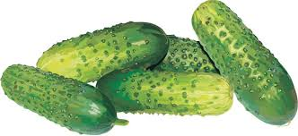

The incredibly tender skin on this favorite burpless Cuke is an inky-green with faint ridges, and the flesh is crisp, juicy, and delicious!
Cucumbers can be allowed to grow on the ground, but for longer, straighter fruit and to save garden space, grow them in a cage or on a trellis, allowing 1 foot between plants.